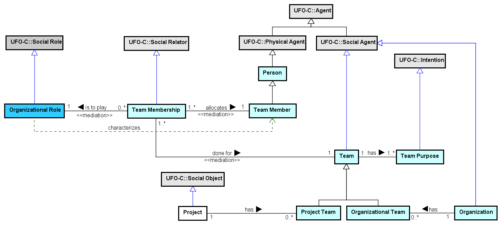

The Enterprise Ontology (EO) aims at establishing a common conceptualization on the Entreprise domain, including organizations, organizational units, people, roles, teams and projects.
Currently, it as considered external to SEON.
Networked ontologies used by EO:
| Ontology | Relation | Integration Level |
| UFO - Unified Foundational Ontology | The EO concepts are derived from UFO (mostly social entities from UFO-C). | High |
Figure 1 presents the conceptual model of the Teams.

Figure 1. Teams conceptual model.
Project Team
Organizational Team
Team Membership
Figure 2 presents the conceptual model of the Job Plan and Roles.
Figure 2. Job Plan and Roles conceptual model.
No definition in Astah file
No definition in Astah file
Figure 3 presents the conceptual model of the Organizational Structure subontology.

Figure 3. Organizational Structure conceptual model.
No definition in Astah file
No definition in Astah file
Figure 4 presents the conceptual model of the HR Management subontology.

Figure 4. HR Management conceptual model.
No definition in Astah file
The following table shows the definitions for EO concepts.
| Concept | Definition |
| Allocation Unit
|
|
| Business Role
|
|
| Complex Organizational Unit
|
|
| Complex Standalone Formal Organization
|
|
| Employment
|
|
| Employment Type
|
|
| Formal Organization
|
|
| Formal Organization Employer
|
|
| Formal Organization Member Type
|
|
| Formal Organization Type
|
|
| Human Resource
|
|
| Human Resource Role
|
|
| Job Plan
|
|
| Multi Formal Organization
|
|
| OU Assignment
|
|
| OU Assignment Type
|
|
| OU Member
|
|
| Organization
|
Same as UFO::Organization. A Social Agent involving people and other agents and facilities with an arrangement of responsibilities, authorities and relationships. Ex.: A company, an enterprise, a software house. |
| Organizational Role
|
A Social Role, recognized by the Organization, assigned to Agents when they are hired, included in a team, allocated or participating in activities.
Ex.: System Analyst, Designer, Programmer, Client Organization. |
| Organizational Team
|
|
| Organizational Unit
|
|
| Organizational Unit Type
|
|
| Project
|
A Social Object as a temporary endeavor undertaken to create a unique product, service, or result.
Ex.: A project to produce a software on demand. |
| Project Team
|
|
| Simple Organizational Unit
|
|
| Simple Standalone Formal Organization
|
|
| Standalone Formal Organization
|
|
| Team
|
Social Agent representing a group of people with a defined purpose.
Ex.: a Testing team, a Quality Assurance team, a Deployment team. |
| Team Member
|
|
| Team Membership
|
|
| Team Purpose
|
|
<<role>>Allocation Unit |
Allocation Unit <>-- OU Member <<memberOf>>
OU Assignment (1..*) assigns to (1..1) Allocation Unit <<mediation>>
<<2ndOT>>Business Role |
Business Role (0..*) covers (0..*) Business Role
Business Role (1..*) (0..*) OU Member <<instantiation>>
OU Assignment Type (0..*) mediates business role (1..*) Business Role
Formal Organization Member Type (1..*) covers (0..*) Business Role
| Complex Organizational Unit |
Complex Organizational Unit (0..1) <>-- (2..*) Simple Organizational Unit <<material>>
| Complex Standalone Formal Organization |
Complex Standalone Formal Organization (1..1) <>-- (2..*) Organizational Unit <<material>>
<<relator>>Employment |
Employment (0..*) made by (1..1) Formal Organization Employer <<mediation>>
Employment (1..*) employs (1..1) Human Resource <<mediation>>
Employment (0..*) to act as (1..1) Organizational Role <<mediation>>
Employment Type (1..1) (0..*) Employment <<instantiation>>
OU Assignment (0..*) refers to (1..1) Employment
<<2ndOT>>Employment Type |
Employment Type (0..*) mediates org type (1..*) Formal Organization Type
Employment Type (0..*) mediates org member type (1..*) Formal Organization Member Type
Employment Type (1..1) (0..*) Employment <<instantiation>>
<<kind>>Formal Organization |
Formal Organization Type (1..*) (0..*) Formal Organization <<instantiation>>
<<role>>Formal Organization Employer |
Formal Organization Employer <>-- Human Resource <<memberOf>>
Employment (0..*) made by (1..1) Formal Organization Employer <<mediation>>
<<2ndOT>>Formal Organization Member Type |
Formal Organization Member Type (1..*) covers (0..*) Business Role
Formal Organization Member Type (1..*) (0..*) Human Resource <<instantiation>>
Employment Type (0..*) mediates org member type (1..*) Formal Organization Member Type
<<2ndOT>>Formal Organization Type |
Formal Organization Type (0..*) is compatible with org type (0..*) Formal Organization Type
Formal Organization Type (0..*) is compatible with unit type (0..*) Organizational Unit Type
Formal Organization Type (1..*) (0..*) Formal Organization <<instantiation>>
Employment Type (0..*) mediates org type (1..*) Formal Organization Type
<<role>>Human Resource |
Employment (1..*) employs (1..1) Human Resource <<mediation>>
Formal Organization Employer <>-- Human Resource <<memberOf>>
Formal Organization Member Type (1..*) (0..*) Human Resource <<instantiation>>
<<2ndOT>>Human Resource Role |
<<kind>>Job Plan |
Job Plan (1..1) defines (1..*) Organizational Role
Job Plan (0..*) recognized by (1..1) Organization
| Multi Formal Organization |
Multi Formal Organization (0..1) <>-- (2..*) Standalone Formal Organization <<material>>
<<relator>>OU Assignment |
OU Assignment (1..*) assigns (1..1) OU Member <<mediation>>
OU Assignment (1..*) assigns to (1..1) Allocation Unit <<mediation>>
OU Assignment (0..*) refers to (1..1) Employment
OU Assignment Type (1..1) (0..*) OU Assignment <<instantiation>>
<<2ndOT>>OU Assignment Type |
OU Assignment Type (0..*) mediates ou type (1..*) Organizational Unit Type
OU Assignment Type (0..*) mediates business role (1..*) Business Role
OU Assignment Type (1..1) (0..*) OU Assignment <<instantiation>>
<<role>>OU Member |
OU Assignment (1..*) assigns (1..1) OU Member <<mediation>>
Allocation Unit <>-- OU Member <<memberOf>>
Business Role (1..*) (0..*) OU Member <<instantiation>>
<<category>>Organization |
Organization (1..1) has (0..*) Organizational Team
Organizational Intended Process (0..*) defined for (1..1) Organization
Job Plan (0..*) recognized by (1..1) Organization
Standard Process Definition Document (0..*) recognized by (1..*) Organization
Performed Organizational Process (0..*) performed in (1..1) Organization
<<2ndOT>>Organizational Role |
Standard Activity (0..*) is to be performed by (0..*) Organizational Role
Employment (0..*) to act as (1..1) Organizational Role <<mediation>>
Stakeholder Participation (0..*) acts as (1..1) Organizational Role
Operational Definition of Measure (0..*) indicates (0..1) Organizational Role
Team Membership (0..*) is to play (1..1) Organizational Role <<mediation>>
Job Plan (1..1) defines (1..*) Organizational Role
Stakeholder Allocation (0..*) to act as (1..1) Organizational Role <<material>>
Intended Activity (0..*) is to be performed by (0..*) Organizational Role
<<subkind>>Organizational Team |
Organization (1..1) has (0..*) Organizational Team
<<kind>>Organizational Unit |
Complex Standalone Formal Organization (1..1) <>-- (2..*) Organizational Unit <<material>>
Organizational Unit Type (1..*) (0..*) Organizational Unit <<instantiation>>
<<2ndOT>>Organizational Unit Type |
Organizational Unit Type (0..*) is compatible with subunit type (0..*) Organizational Unit Type
Organizational Unit Type (1..*) (0..*) Organizational Unit <<instantiation>>
OU Assignment Type (0..*) mediates ou type (1..*) Organizational Unit Type
Formal Organization Type (0..*) is compatible with unit type (0..*) Organizational Unit Type
<<kind>>Project |
Project (1..1) has (0..*) Project Team
<<subkind>>Project Team |
Project (1..1) has (0..*) Project Team
| Simple Organizational Unit |
Complex Organizational Unit (0..1) <>-- (2..*) Simple Organizational Unit <<material>>
| Simple Standalone Formal Organization |
| Standalone Formal Organization |
Multi Formal Organization (0..1) <>-- (2..*) Standalone Formal Organization <<material>>
<<kind>>Team |
Team (1..1) has (1..*) Team Purpose
Team (1..1) done for (1..*) Team Membership <<mediation>>
<<role>>Team Member |
Team Member (1..1) allocates (1..*) Team Membership <<mediation>>
<<relator>>Team Membership |
Team Membership (0..*) is to play (1..1) Organizational Role <<mediation>>
Team (1..1) done for (1..*) Team Membership <<mediation>>
Team Member (1..1) allocates (1..*) Team Membership <<mediation>>
<<mode>>Team Purpose |
Team (1..1) has (1..*) Team Purpose